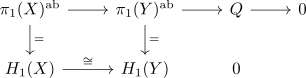
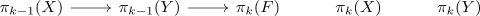

homology whitehead for nilpotent connected spaces
Proposition
Let $X,Y$ be connected nilpotent space spaces. Then a continuous map $f: X \rightarrow Y$ which induces an isomorphism on singular homology is a weak homotopy equivalence
Proof
we show that $f$ is \(n\)-connected for each $n$, hence a weak homotopy equivalence
$f$ as \(1\)-connected map
We have to show that $\pi_1(f)$ is surjective. Let
We show that $Q$ is a nilpotent group.

where the bottom is exact
claim
Then it follows that the homotopy fibre is connected to show $f$ is a \(\infty\)-connected it suffices to show that
for all $n \geq 2$
We proof this inductively over $n$.
We have to show that $\pi_{n-1}(F) = 0$
Then the $\pi_1(X)\-action on $\%i_1(F)$ is nilpotent This follows by the exact sequence

is an exact sequence in \mathrm{Fun}(\pi_1(X), \mathrm{Grp})$